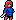
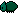
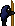

Elisis, é um jogo 2D, estilo pixel art, com os elementos de metroidvania, ou seja: mundo aberto, porém certos caminhos só é possível depois de avançar em certo nível, ou conseguir um power up que possibilite passar o obstáculo.
O projeto está em andamento, e segue abaixo tudo que está pronto ou quase pronto:
- jogador 
- cenário
- inimigos
- Besouro 
- Mosquito verde

- Mosquito da caverna

- Morcego

- Salamandra

- Mosca

- Besouro Branco

- Golem de pedra

- poderes
- terra
- fogo
- água
- ar
- Boss
- Colecionador 
O cenário inicial do jogo está pronto, o próximo passo é fazer a cidade base na qual o jogador fará compras, irá interagir com npcs sobre a história, e o mapa principal. Para mais informações segue os links:
voltar